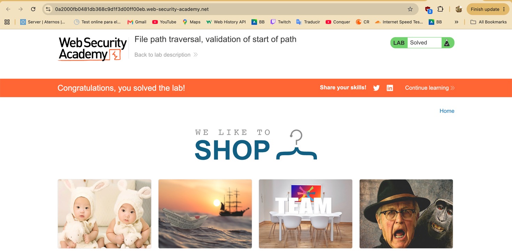

1. Ficha Técnica del Laboratorio
Nombre del Laboratorio
File path traversal, validation of start of path
Nivel de Dificultad
Practitioner
Tipo de Explotación
File Path Traversal (Base Folder Prefix Bypass)
Objetivo del Laboratorio
Cumplir con la validación del prefijo /var/www/images/ y escalar directorios para extraer /etc/passwd.
2. Explicación Técnica de la Vulnerabilidad
En ciertas arquitecturas web, las peticiones del cliente envían la ruta completa del recurso requerido y el backend verifica que la cadena comience con el directorio base autorizado (por ejemplo, comprobando mediante startsWith("/var/www/images")). El fallo de diseño radica en que el servidor valida únicamente el prefijo textual de la cadena antes de que el sistema operativo resuelva o canonicalice la ruta completa.
Clasificada bajo OWASP Top 10 (A01: Broken Access Control), esta vulnerabilidad compromete directamente la Confidencialidad en la tríada CIA. Un atacante puede conservar el inicio de ruta exigido por el validador y concatenar inmediatamente secuencias ../ para retroceder hacia el directorio raíz (/), exponiendo archivos de configuración del servidor, llaves privadas o cadenas de conexión hacia bases de datos.
3. Procedimiento Paso a Paso
Secuencia metodológica de análisis y explotación mediante Burp Suite.
Intercepción y Reconocimiento de la Ruta Base
Se inicia el laboratorio desde el navegador integrado de Burp Suite. Al inspeccionar las peticiones GET en Proxy > HTTP history habilitando el filtro de imágenes, se observa que el parámetro filename transmite la ruta completa del servidor: /image?filename=/var/www/images/18.jpg.
Análisis de la Regla de Validación en Repeater
Se envía la petición al módulo Repeater. Si se intenta reemplazar la ruta completa por /etc/passwd o ../../../etc/passwd, la aplicación rechaza la solicitud con un código 400 Bad Request, comprobando que el backend exige obligatoriamente que la cadena comience con /var/www/images/.
Concatenación del Salto de Directorio
Manteniendo intacto el directorio base requerido de 3 niveles de profundidad (var, www, images), se agregan tres secuencias ../ seguidas del archivo objetivo, enviando en el Repeater el parámetro filename=/var/www/images/../../../etc/passwd.
Resolución de Ruta y Confirmación
El validador aprueba el prefijo inicial y transfiere la cadena al sistema de archivos, el cual resuelve los saltos relativos hasta la raíz y retorna HTTP/2 200 OK con el contenido íntegro de /etc/passwd, completando satisfactoriamente el laboratorio.
4. Evidencia Gráfica de Explotación
Captura de la petición modificada en Burp Suite Repeater conservando el inicio de ruta válido y la respuesta del servidor exponiendo el archivo /etc/passwd.

Espacio para Foto de Evidencia
Guarda tu captura en la misma carpeta con el nombre evidencia-act11.png o actualiza el atributo src de la etiqueta <img>.
5. Explicación del Payload
/var/www/images/../../../etc/passwd
El payload se divide en dos componentes lógicos que derrotan la validación superficial y aprovechan la resolución del sistema operativo:
6. Mitigación Recomendada
Validar el inicio de una ruta mediante una simple comparación de texto sin resolver antes los saltos relativos es ineficaz. Para asegurar el endpoint:
- Canonicalizar antes de validar: Resolver primero la ruta absoluta real utilizando APIs del sistema de archivos (como
getCanonicalPath()en Java oos.path.realpath()en Python) y después verificar que comience con/var/www/images/. - No enviar rutas completas en parámetros: Recibir únicamente el nombre base del archivo (validado por lista blanca) y construir la ruta internamente en el servidor.
7. Evidencia Documental Original
Consulta el documento completo en formato PDF con las 4 evidencias obligatorias de la práctica: request interceptado, payload utilizado, respuesta vulnerable y confirmación de "Lab Solved".